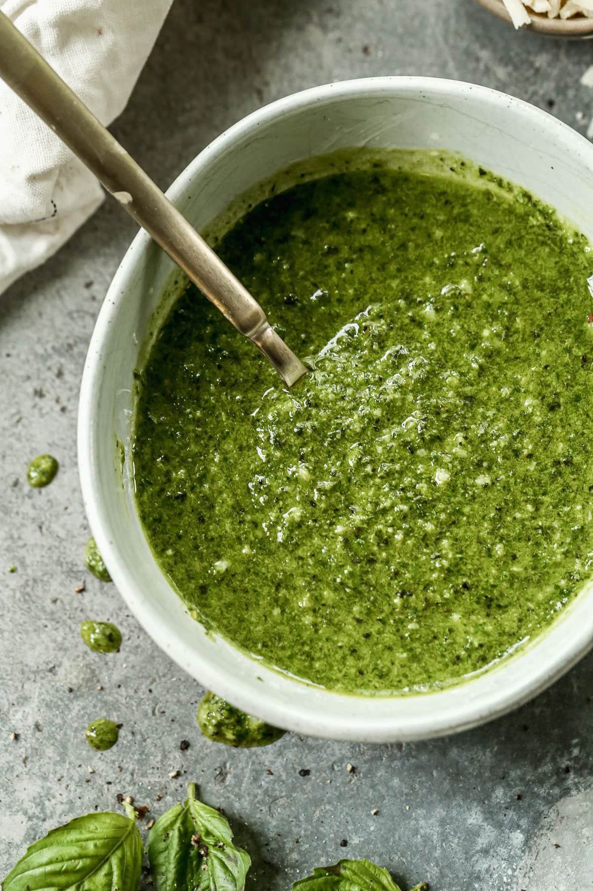

Basil Pesto

Homade basic pesto pasta
Pesto or the pesto alla genovese is a traditional Italian sauce made with fresh basil leaves,
pine nuts, garlic, salt, Parmesan cheese, and olive oil. For hundreds of years, pesto was
made by pounding the ingredients in a mortar and pestle. It dates back from Roman times.
INGRIDIENTS:
- 2 cups fresh basil leaves, packed (can sub half the basil leaves with baby spinach)
- 1/2 cup freshly grated Romano or Parmesan cheese (about 2 ounces)
- 1/2 cup extra virgin olive oil
- 1/3 cup pine nuts (can sub chopped walnuts)
- 3 cloves garlic, minced (about 1 tablespoon)
- 1/4 teaspoon salt, or more to taste
- 1/8 teaspoon freshly ground black pepper, or more to taste
INSTRUCTIONS
- Pulse the basil and pine nuts:
Place the basil leaves and pine nuts into the bowl of a food processor and
pulse several times.
- Add the garlic and cheese:
Add the garlic and Parmesan or Romano cheese and pulse several times more.
Scrape down the siddes of the food processor with a rubber spatula.
- Slowly pour in the olive oil:
While the food processor is running, slowly add the olive oil in a steady
small stream. Adding the olive oil slowly while the processor is running
will help it emulsify and help keep the olive oil from separating.
Occasionally, stop to scrape down the sides of the food processor.
- Season the pesto sauce:
Add salt and freshly ground black pepper to taste.